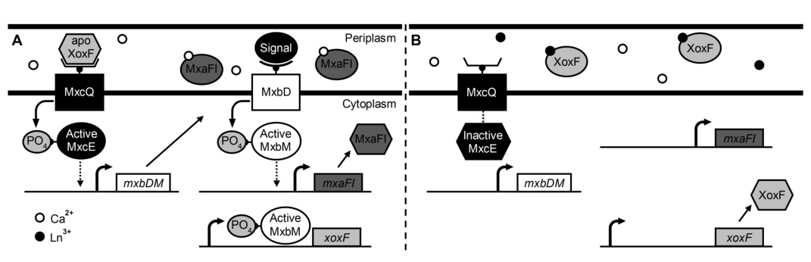

Sensor histidine kinase (MxbD) component of the MxbDM two-component regulatory system that controls expression of methanol oxidation genes in Methylorubrum extorquens AM1. MxbD is the sensor histidine kinase and MxbM the cognate response regulator. UniProt-annotated domain architecture comprises two transmembrane regions with HAMP, HisKA (His_kinase_dom) and HATPase_c domains, consistent with a canonical membrane-associated sensor kinase that autophosphorylates a histidine and transfers phosphate to the MxbM response regulator. Functionally, the MxbDM system is required for expression of the mxa operon (Ca-dependent methanol dehydrogenase) and for repression of the lanthanide-responsive xox1 operon in the absence of lanthanides, acting within a regulatory network with MxcQE and the orphan response regulator MxaB. This network underlies the lanthanide ("Ln") switch between Ca-dependent (mxa) and Ln-dependent (xox) methanol dehydrogenase systems. Important caveats: the direct signal sensed by MxbD in AM1, whether its regulatory effects are direct or indirect, and biochemical evidence for phosphorylation state and direct DNA binding by the response regulators remain unresolved in the primary literature; experimental membrane topology/localization in AM1 has not been demonstrated. The MxbD sensing region has been repurposed as a modular methanol-sensing input in engineered chimeric histidine kinases (E. coli biosensors).
| GO Term | Evidence | Action | Reason |
|---|---|---|---|
|
GO:0000155
phosphorelay sensor kinase activity
|
IEA
GO_REF:0000002 |
ACCEPT |
Summary: Correct. MxbD is the sensor histidine kinase of the MxbDM two-component system; it carries the HisKA dimerization/phospho-acceptor and HATPase_c catalytic domains characteristic of phosphorelay sensor kinases and acts with the cognate response regulator MxbM. The deep-research synthesis consistently identifies MxbD as the sensor histidine kinase component of MxbDM. Note that direct biochemical demonstration of phosphotransfer in AM1 has not been reported (regulatory role is supported by genetics/reporters), but the sensor histidine kinase assignment is well supported by domain architecture and modular-sensor engineering studies.
Supporting Evidence:
file:METEA/mxbD/mxbD-deep-research-falcon.md
**mxbD/MxbD** consistently refers to the **sensor histidine kinase component** of the **MxbDM** two-component regulatory system involved in regulating methanol oxidation gene expression in AM1, with **MxbM** as the cognate response regulator
file:METEA/mxbD/mxbD-deep-research-falcon.md
(i) a **sensor histidine kinase** that autophosphorylates on a histidine residue using ATP and (ii) a **response regulator** that is phosphorylated on an aspartate residue to change gene regulation
|
|
GO:0000160
phosphorelay signal transduction system
|
IEA
GO_REF:0000043 |
ACCEPT |
Summary: Correct. MxbD and MxbM constitute the MxbDM two-component phosphorelay system. MxbDM acts within a regulatory hierarchy/network with MxcQE and the orphan response regulator MxaB to control methanol dehydrogenase gene expression: it is required for expression of the mxa operon and for repression of the xox1 operon in the absence of lanthanides. Whether the regulatory control is direct or indirect, and the phosphorylation state of the components, remain unresolved in AM1.
Supporting Evidence:
file:METEA/mxbD/mxbD-deep-research-falcon.md
**MxbDM** (MxbD sensor kinase + MxbM response regulator) and **MxcQE** (MxcQ sensor kinase + MxcE response regulator), together with the orphan response regulator **MxaB**, form a regulatory network controlling expression of methanol dehydrogenase systems
file:METEA/mxbD/mxbD-deep-research-falcon.md
the **MxbDM two-component system is required for repression of the xox1 operon in the absence of lanthanides**
|
|
GO:0004673
protein histidine kinase activity
|
IEA
GO_REF:0000003 |
ACCEPT |
Summary: Correct (EC 2.7.13.3; ATP + protein L-histidine = ADP + protein N-phospho-L-histidine). MxbD is a sensor histidine kinase with HAMP, HisKA and HATPase_c domains and two transmembrane regions. The histidine kinase assignment is reinforced by engineering work in which the MxbD sensing region is swapped into chimeric histidine kinases. Note that in vitro autophosphorylation of AM1 MxbD itself has not been directly demonstrated in the retrieved literature; the assignment rests on domain architecture and conserved two-component logic.
Supporting Evidence:
file:METEA/mxbD/mxbD-deep-research-falcon.md
MxbD is treated as a **sensor histidine kinase** whose “sensing domain” can be modularly swapped into engineered chimeric histidine kinases
|
|
GO:0007165
signal transduction
|
IEA
GO_REF:0000002 |
ACCEPT |
Summary: Correct. As the sensor kinase of the MxbDM two-component system, MxbD transduces a signal (whose precise identity in AM1 is unresolved) to control transcription of methanol oxidation genes, contributing to the lanthanide-responsive switch between the mxa and xox1 systems. The native input signal (lanthanides directly, methanol/formaldehyde, XoxF metal status, or another cue) remains an open question.
Supporting Evidence:
file:METEA/mxbD/mxbD-deep-research-falcon.md
**MxbD/MxbM** is best supported as a **regulatory (signaling) module**, not a metabolic enzyme: it is a two-component system required for proper expression and reciprocal control of methanol dehydrogenase gene clusters
file:METEA/mxbD/mxbD-deep-research-falcon.md
it is not known if the requirement for these regulators is direct or indirect or what is being sensed by these systems
|
|
GO:0016020
membrane
|
IEA
GO_REF:0000120 |
ACCEPT |
Summary: Correct (UniProt SUBCELLULAR LOCATION = Membrane; two transmembrane regions predicted). MxbD is a membrane-associated sensor kinase. Note that experimental validation of membrane topology/localization specifically in AM1 was not identified in the retrieved literature; the assignment rests on sequence/topology prediction and the canonical architecture of sensor histidine kinases.
Supporting Evidence:
file:METEA/mxbD/mxbD-deep-research-falcon.md
it is expected to function at the **cell envelope–cytosol signaling interface**, but **experimental validation of membrane topology/localization in AM1 is lacking** in the evidence retrieved here
|
|
GO:0016301
kinase activity
|
IEA
GO_REF:0000043 |
ACCEPT |
Summary: Correct but general. MxbD is a histidine (protein) kinase; the more specific terms GO:0004673 (protein histidine kinase activity) and GO:0000155 (phosphorelay sensor kinase activity) better capture its function. Retained as a true but high-level parent.
|
|
GO:0016740
transferase activity
|
IEA
GO_REF:0000043 |
ACCEPT |
Summary: Correct but very general. This is a high-level parent of the histidine kinase activity; the specific child terms (GO:0004673, GO:0000155) are the informative annotations. Retained as a true but uninformative parent.
|
|
GO:0016772
transferase activity, transferring phosphorus-containing groups
|
IEA
GO_REF:0000002 |
ACCEPT |
Summary: Correct but general. Parent of histidine kinase activity (transfers phosphate from ATP to a histidine residue, then to the MxbM response regulator). The specific MF terms GO:0004673 and GO:0000155 are preferred. Retained as a true but high-level parent.
|
The research report should be a detailed narrative explaining the function, biological processes, and localization of the gene product. Citations should be given for all claims.
You should prioritize authoritative reviews and primary scientific literature when conducting research. You can supplement
this with annotations you find in gene/protein databases, but these can be outdated or inaccurate.
We are specifically interested in the primary function of the gene - for enzymes, what reaction is catalyzed, and what is the substrate specificity? For transporters, what is the substrate? For structural proteins or adapters, what is the broader structural role? For signaling molecules, what is the role in the pathway.
We are interested in where in or outside the cell the gene product carries out its function.
We are also interested in the signaling or biochemical pathways in which the gene functions. We are less interested in broad pleiotropic effects, except where these elucidate the precise role.
Include evidence where possible. We are interested in both experimental evidence as well as inference from structure, evolution, or bioinformatic analysis. Precise studies should be prioritized over high-throughput, where available.
The target described by UniProt accession C5B133 is annotated as a histidine kinase (EC 2.7.13.3) encoded by mxbD in Methylorubrum extorquens strain AM1 (a.k.a. Methylobacterium extorquens AM1). In the accessible literature corpus retrieved here, mxbD/MxbD consistently refers to the sensor histidine kinase component of the MxbDM two-component regulatory system involved in regulating methanol oxidation gene expression in AM1, with MxbM as the cognate response regulator; no conflicting “mxbD” identity from other organisms was encountered in the evidence extracted. (skovran2019lanthanidesinmethylotrophy pages 6-8, dubey2019mnosrisa pages 25-28, vu2016lanthanidedependentregulationof pages 6-9)
Limitations: the retrieved full-text sources did not contain the UniProt/InterPro domain-by-domain description needed to independently confirm the reported HAMP/HATPase/HisKA-like architecture from sequence annotations. Therefore, domain architecture is treated as UniProt-provided context rather than re-validated from primary sequence analysis in this run.
Two-component systems typically comprise (i) a sensor histidine kinase that autophosphorylates on a histidine residue using ATP and (ii) a response regulator that is phosphorylated on an aspartate residue to change gene regulation. In AM1 methylotrophy, MxbDM (MxbD sensor kinase + MxbM response regulator) and MxcQE (MxcQ sensor kinase + MxcE response regulator), together with the orphan response regulator MxaB, form a regulatory network controlling expression of methanol dehydrogenase systems. (skovran2019lanthanidesinmethylotrophy pages 6-8, vu2016lanthanidedependentregulationof pages 6-9)
AM1 encodes methanol dehydrogenase systems whose transcription responds strongly to lanthanides (Ln). Vu et al. experimentally demonstrated that in AM1, xox1 transcriptional activation is detectable at ~2.5 nM La and reaches a maximum by ~250 nM La, while repression of the mxa promoter begins between 25–50 nM La and is fully repressed at ~250 nM La (with no further change up to 20 μM La). This defines a quantitatively steep Ln-responsive transcriptional switch between mxa and xox1. (vu2016lanthanidedependentregulationof pages 14-18)
Across AM1-focused sources, MxbD/MxbM is best supported as a regulatory (signaling) module, not a metabolic enzyme: it is a two-component system required for proper expression and reciprocal control of methanol dehydrogenase gene clusters.
Vu et al. propose a model in which apo-XoxF (XoxF lacking a lanthanide cofactor) can act as a sensor for lanthanide presence by interacting (directly or indirectly) with the two-component systems MxcQE and MxbDM, such that:
A schematic of this Ln-switch hypothesis (with MxbDM and MxcQE explicitly depicted) is provided in Vu et al. (Figure 8). (vu2016lanthanidedependentregulationof media 5459bc04)
A recurring expert assessment in both a primary study (Vu 2016) and an authoritative review (Skovran 2019) is that key mechanistic details of MxbDM remain unresolved:
Interpretation: While MxbD is annotated and used as a histidine kinase sensor in a canonical TCS architecture, the native input signal to MxbD in AM1 (lanthanide ions directly, methanol, formaldehyde, XoxF/metal status, or another periplasmic/cellular cue) remains an open question in the AM1 system, and regulatory connections are supported largely through genetics/reporters and network inference rather than direct biochemical reconstitution of phosphotransfer/DNA-binding.
Direct experimental localization/topology for AM1 MxbD was not identified in the retrieved full-text excerpts. However, MxbD is treated as a sensor histidine kinase whose “sensing domain” can be modularly swapped into engineered chimeric histidine kinases (see Applications below), which is consistent with (but does not prove) a typical HK architecture where an N-terminal sensor region (often membrane/periplasm-associated) is coupled to a cytosolic kinase transmitter. (selvamani2020engineeringofrecombinant pages 1-3, selvamani2020engineeringofrecombinant pages 3-5)
Accordingly, a cautious functional-annotation statement supported by literature is:
* Localization inference: MxbD is a signaling protein belonging to a two-component system regulating transcription; it is expected to function at the cell envelope–cytosol signaling interface, but experimental validation of membrane topology/localization in AM1 is lacking in the evidence retrieved here. (vu2016lanthanidedependentregulationof pages 6-9, skovran2019lanthanidesinmethylotrophy pages 6-8)
Direct 2023–2024 primary literature specifically dissecting MxbD biochemistry in AM1 was not retrieved in this run. However, 2023 research continues to expand the broader conceptual landscape in which MxbDM operates—lanthanide-regulated methylotrophy and methanol-linked behaviors:
Methanol metabolism-linked chemotaxis and plant colonization (2023): In Methylobacterium aquaticum strain 22A, Tani et al. report that methylotaxis depends on multiple methyl-accepting chemotaxis proteins (MCPs) and that one MCP (MtpC) is regulated under MxbDM, linking methanol oxidation state and regulatory networks to host colonization behavior in a plant-associated methylobacterium. While not AM1, it underscores that MxbDM-like regulation is leveraged in related taxa for methanol-associated ecological traits. (Published Oct 2023; URL: https://doi.org/10.3389/fmicb.2023.1258452) (tani2023metabolismlinkedmethylotaxissensors pages 2-3)
Ln-dependent and Ln-responsive physiology continues to broaden beyond AM1 (2023–2024): Work in diverse bacteria (e.g., a novel lanthanide-accumulating methylotroph and a non-methylotroph model) emphasizes that Ln can reprogram substantial portions of bacterial transcriptomes and that Ln sensing/signaling can discriminate between different Ln elements—contextually supporting why AM1’s Ln-responsive regulatory network (including MxbDM) remains an active research frontier. (Dec 2023; URL: https://doi.org/10.1128/spectrum.00867-23) (Oct 2024; URL: https://doi.org/10.1128/msphere.00685-24) (These papers were retrieved but do not provide AM1-specific mechanistic detail on MxbD.)
A concrete implementation using MxbD as a modular sensor is demonstrated by Selvamani et al. (2020), who engineered E. coli methanol biosensors using domain swapping.
Relevance to functional annotation: this supports that MxbD contains an input/sensing region that can be repurposed as a modular sensor in heterologous TCS architectures, consistent with its annotation as a sensor histidine kinase. (selvamani2020engineeringofrecombinant pages 1-3)
Key quantitative findings supporting pathway-level annotation:
Distinct lanthanides (La, Ce, Pr, Nd) reproduce the differential expression pattern; Sm has only a small effect. (Apr 2016; URL: https://doi.org/10.1128/jb.00937-15) (vu2016lanthanidedependentregulationof pages 14-18)
Methanol biosensor response regime using MxbD-derived sensing (heterologous system):
Gene/product: mxbD encodes MxbD, a sensor histidine kinase that forms the MxbDM two-component system with response regulator MxbM in Methylorubrum extorquens AM1. (skovran2019lanthanidesinmethylotrophy pages 6-8, vu2016lanthanidedependentregulationof pages 6-9)
Primary role in AM1: MxbDM participates in the lanthanide-responsive transcriptional network controlling methanol oxidation systems, specifically supporting mxa operon expression and contributing to repression of xox1 in lanthanide-free conditions. (vu2016lanthanidedependentregulationof pages 6-9)
Pathway context: MxbDM acts together with MxcQE and MxaB in regulating methanol dehydrogenase gene expression, within a lanthanide switch framework where lanthanide availability tunes expression of Ca-dependent (mxa) vs Ln-dependent (xox) methanol dehydrogenases. (vu2016lanthanidedependentregulationof pages 6-9, vu2016lanthanidedependentregulationof pages 14-18)
Mechanistic status: The direct signal sensed by MxbD, whether regulation is direct vs indirect, and biochemical evidence for phosphorylation state and direct DNA binding by response regulators remain unresolved in the cited AM1 literature synthesis. (skovran2019lanthanidesinmethylotrophy pages 6-8, vu2016lanthanidedependentregulationof pages 6-9)
| Topic | Key points | Best supporting sources (with year) |
|---|---|---|
| MxbD/MxbM function in Methylorubrum extorquens AM1 | MxbD is the sensor histidine kinase and MxbM the cognate response regulator of the MxbDM two-component system implicated in methanol oxidation gene regulation. The system is required for proper expression of methanol oxidation functions in AM1 and is positioned within a broader regulatory network with MxcQE and MxaB. | Skovran et al. 2019 review summarizing primary genetics; Springer et al. 1997 primary study cited therein (skovran2019lanthanidesinmethylotrophy pages 6-8, dubey2019mnosrisa pages 25-28) |
| Regulatory targets: mxa operon | MxbDM is required for expression of the mxa operon encoding the Ca-dependent methanol dehydrogenase system; MxbM is specifically described as required for mxa expression. MxcQE and MxaB also contribute to mxa activation, suggesting a multilayer cascade rather than a simple one-step control pathway. | Skovran et al. 2019; Vu et al. 2016 (skovran2019lanthanidesinmethylotrophy pages 6-8, vu2016lanthanidedependentregulationof pages 6-9) |
| Regulatory targets: xox1 operon | In AM1, MxbDM is required to repress the xox1 operon under lanthanide-free conditions; MxbM is highlighted as uniquely required for xox1 repression in the reviewed model. This places MxbDM at the center of the inverse regulation between Ca-dependent mxa and Ln-dependent xox methanol dehydrogenase systems. | Skovran et al. 2019; Vu et al. 2016 (skovran2019lanthanidesinmethylotrophy pages 6-8, vu2016lanthanidedependentregulationof pages 6-9) |
| Lanthanide dependence / Ln-switch model | The best-supported current model is a lanthanide switch: without Ln, apo-XoxF is proposed to help drive mxa expression and xox1 repression through MxcQE/MxbDM-linked signaling; with Ln present, XoxF becomes the active Ln-dependent enzyme and regulation flips toward xox1 expression and mxa repression. Expression from mxa and xox1 promoters is highly sensitive to Ln such as La, Ce, Pr, and Nd. | Vu et al. 2016 and its regulatory schematic; Skovran et al. 2019 (vu2016lanthanidedependentregulationof pages 6-9, vu2016lanthanidedependentregulationof media 5459bc04, skovran2019lanthanidesinmethylotrophy pages 6-8) |
| Known vs unknown mechanism | Known: MxbDM is a two-component regulatory pair associated with methanol metabolism and Ln-responsive regulation of mxa/xox expression. Unknown/uncertain: the direct signal sensed by MxbD in native AM1 remains unresolved; whether control is direct or indirect is still unclear; the phosphorylation state of MxbD/MxbM and direct DNA binding by these regulators had not been demonstrated in the cited review literature. | Vu et al. 2016; Skovran et al. 2019 (vu2016lanthanidedependentregulationof pages 6-9, skovran2019lanthanidesinmethylotrophy pages 6-8) |
| Domain/function inference for MxbD | Independently of unresolved native mechanism, MxbD is treated as a histidine kinase sensor component, consistent with two-component signaling logic and with engineering studies that use its input/sensing region as a modular sensor fused to another kinase transmitter domain. This supports functional annotation as a membrane-associated/environmental sensor rather than a catalytic methanol-oxidizing enzyme. | Selvamani et al. 2020; Skovran et al. 2019 (selvamani2020engineeringofrecombinant pages 1-3, selvamani2020engineeringofrecombinant pages 3-5, skovran2019lanthanidesinmethylotrophy pages 6-8) |
| Real-world application: methanol biosensor chimeras | MxbD has been repurposed in engineered E. coli methanol biosensors by fusing the MxbD sensing region to the EnvZ transmitter. The resulting chimeric kinase activated OmpR/ompC and GFP output, with reported maximal fluorescence at 0.05% methanol for MxbDZ; assays tested 0-8% methanol, demonstrating practical use of MxbD-derived sensing for synthetic biology. | Selvamani et al. 2020 (selvamani2020engineeringofrecombinant pages 1-3, selvamani2020engineeringofrecombinant pages 3-5) |
Table: This table condenses the best-supported evidence on MxbD/MxbM in Methylorubrum extorquens AM1, emphasizing regulatory role, lanthanide-responsive control of mxa/xox1, major mechanistic uncertainties, and a concrete biosensor application.
Vu et al. provide a schematic hypothesis of the Ln switch and the proposed role of MxbDM/MxcQE in mediating opposite regulation of mxa vs xox1 depending on lanthanide availability. (vu2016lanthanidedependentregulationof media 5459bc04)
References
(skovran2019lanthanidesinmethylotrophy pages 6-8): Elizabeth Skovran, Charumathi Raghuraman, and Norma Cecilia Martinez-Gomez. Lanthanides in methylotrophy. Current issues in molecular biology, 33:101-116, Jan 2019. URL: https://doi.org/10.21775/cimb.033.101, doi:10.21775/cimb.033.101. This article has 49 citations.
(dubey2019mnosrisa pages 25-28): Abhishek Anil Dubey and Vikas Jain. Mnosr is a bona fide two-component system involved in methylotrophic metabolism in mycobacterium smegmatis. Applied and Environmental Microbiology, Jul 2019. URL: https://doi.org/10.1128/aem.00535-19, doi:10.1128/aem.00535-19. This article has 16 citations and is from a peer-reviewed journal.
(vu2016lanthanidedependentregulationof pages 6-9): Huong N. Vu, Gabriel A. Subuyuj, Srividhya Vijayakumar, Nathan M. Good, N. Cecilia Martinez-Gomez, and Elizabeth Skovran. Lanthanide-dependent regulation of methanol oxidation systems in methylobacterium extorquens am1 and their contribution to methanol growth. Journal of Bacteriology, 198:1250-1259, Apr 2016. URL: https://doi.org/10.1128/jb.00937-15, doi:10.1128/jb.00937-15. This article has 227 citations and is from a peer-reviewed journal.
(vu2016lanthanidedependentregulationof pages 14-18): Huong N. Vu, Gabriel A. Subuyuj, Srividhya Vijayakumar, Nathan M. Good, N. Cecilia Martinez-Gomez, and Elizabeth Skovran. Lanthanide-dependent regulation of methanol oxidation systems in methylobacterium extorquens am1 and their contribution to methanol growth. Journal of Bacteriology, 198:1250-1259, Apr 2016. URL: https://doi.org/10.1128/jb.00937-15, doi:10.1128/jb.00937-15. This article has 227 citations and is from a peer-reviewed journal.
(vu2016lanthanidedependentregulationof pages 31-40): Huong N. Vu, Gabriel A. Subuyuj, Srividhya Vijayakumar, Nathan M. Good, N. Cecilia Martinez-Gomez, and Elizabeth Skovran. Lanthanide-dependent regulation of methanol oxidation systems in methylobacterium extorquens am1 and their contribution to methanol growth. Journal of Bacteriology, 198:1250-1259, Apr 2016. URL: https://doi.org/10.1128/jb.00937-15, doi:10.1128/jb.00937-15. This article has 227 citations and is from a peer-reviewed journal.
(vu2016lanthanidedependentregulationof media 5459bc04): Huong N. Vu, Gabriel A. Subuyuj, Srividhya Vijayakumar, Nathan M. Good, N. Cecilia Martinez-Gomez, and Elizabeth Skovran. Lanthanide-dependent regulation of methanol oxidation systems in methylobacterium extorquens am1 and their contribution to methanol growth. Journal of Bacteriology, 198:1250-1259, Apr 2016. URL: https://doi.org/10.1128/jb.00937-15, doi:10.1128/jb.00937-15. This article has 227 citations and is from a peer-reviewed journal.
(selvamani2020engineeringofrecombinant pages 1-3): Vidhya Selvamani, Irisappan Ganesh, Sowon Chae, Murali kannan Maruthamuthu, and Soon Ho Hong. Engineering of recombinant escherichia coli towards methanol sensing using methylobacterium extroquens two-component systems. ArXiv, 48:24-31, Mar 2020. URL: https://doi.org/10.4014/mbl.1908.08009, doi:10.4014/mbl.1908.08009. This article has 3 citations.
(selvamani2020engineeringofrecombinant pages 3-5): Vidhya Selvamani, Irisappan Ganesh, Sowon Chae, Murali kannan Maruthamuthu, and Soon Ho Hong. Engineering of recombinant escherichia coli towards methanol sensing using methylobacterium extroquens two-component systems. ArXiv, 48:24-31, Mar 2020. URL: https://doi.org/10.4014/mbl.1908.08009, doi:10.4014/mbl.1908.08009. This article has 3 citations.
(tani2023metabolismlinkedmethylotaxissensors pages 2-3): Akio Tani, Sachiko Masuda, Yoshiko Fujitani, Toshiki Iga, Yuuki Haruna, Shiho Kikuchi, Wang Shuaile, Haoxin Lv, Shiori Katayama, Hiroya Yurimoto, Yasuyoshi Sakai, and Junichi Kato. Metabolism-linked methylotaxis sensors responsible for plant colonization in methylobacterium aquaticum strain 22a. Frontiers in Microbiology, Oct 2023. URL: https://doi.org/10.3389/fmicb.2023.1258452, doi:10.3389/fmicb.2023.1258452. This article has 13 citations and is from a peer-reviewed journal.

id: C5B133
gene_symbol: mxbD
aliases:
- MexAM1_META1p1753
product_type: PROTEIN
taxon:
id: NCBITaxon:272630
label: Methylorubrum extorquens AM1
description: 'Sensor histidine kinase (MxbD) component of the MxbDM two-component
regulatory system that controls expression of methanol oxidation genes in Methylorubrum
extorquens AM1. MxbD is the sensor histidine kinase and MxbM the cognate response
regulator. UniProt-annotated domain architecture comprises two transmembrane regions
with HAMP, HisKA (His_kinase_dom) and HATPase_c domains, consistent with a canonical
membrane-associated sensor kinase that autophosphorylates a histidine and transfers
phosphate to the MxbM response regulator. Functionally, the MxbDM system is required
for expression of the mxa operon (Ca-dependent methanol dehydrogenase) and for repression
of the lanthanide-responsive xox1 operon in the absence of lanthanides, acting within
a regulatory network with MxcQE and the orphan response regulator MxaB. This network
underlies the lanthanide ("Ln") switch between Ca-dependent (mxa) and Ln-dependent
(xox) methanol dehydrogenase systems. Important caveats: the direct signal sensed
by MxbD in AM1, whether its regulatory effects are direct or indirect, and biochemical
evidence for phosphorylation state and direct DNA binding by the response regulators
remain unresolved in the primary literature; experimental membrane topology/localization
in AM1 has not been demonstrated. The MxbD sensing region has been repurposed as a
modular methanol-sensing input in engineered chimeric histidine kinases (E. coli
biosensors).'
existing_annotations:
- term:
id: GO:0000155
label: phosphorelay sensor kinase activity
evidence_type: IEA
original_reference_id: GO_REF:0000002
review:
summary: Correct. MxbD is the sensor histidine kinase of the MxbDM two-component
system; it carries the HisKA dimerization/phospho-acceptor and HATPase_c catalytic
domains characteristic of phosphorelay sensor kinases and acts with the cognate
response regulator MxbM. The deep-research synthesis consistently identifies MxbD
as the sensor histidine kinase component of MxbDM. Note that direct biochemical
demonstration of phosphotransfer in AM1 has not been reported (regulatory role
is supported by genetics/reporters), but the sensor histidine kinase assignment
is well supported by domain architecture and modular-sensor engineering studies.
action: ACCEPT
supported_by:
- reference_id: file:METEA/mxbD/mxbD-deep-research-falcon.md
supporting_text: |-
**mxbD/MxbD** consistently refers to the **sensor histidine kinase component** of the **MxbDM** two-component regulatory system involved in regulating methanol oxidation gene expression in AM1, with **MxbM** as the cognate response regulator
- reference_id: file:METEA/mxbD/mxbD-deep-research-falcon.md
supporting_text: |-
(i) a **sensor histidine kinase** that autophosphorylates on a histidine residue using ATP and (ii) a **response regulator** that is phosphorylated on an aspartate residue to change gene regulation
- term:
id: GO:0000160
label: phosphorelay signal transduction system
evidence_type: IEA
original_reference_id: GO_REF:0000043
review:
summary: 'Correct. MxbD and MxbM constitute the MxbDM two-component phosphorelay
system. MxbDM acts within a regulatory hierarchy/network with MxcQE and the orphan
response regulator MxaB to control methanol dehydrogenase gene expression: it is
required for expression of the mxa operon and for repression of the xox1 operon
in the absence of lanthanides. Whether the regulatory control is direct or indirect,
and the phosphorylation state of the components, remain unresolved in AM1.'
action: ACCEPT
supported_by:
- reference_id: file:METEA/mxbD/mxbD-deep-research-falcon.md
supporting_text: |-
**MxbDM** (MxbD sensor kinase + MxbM response regulator) and **MxcQE** (MxcQ sensor kinase + MxcE response regulator), together with the orphan response regulator **MxaB**, form a regulatory network controlling expression of methanol dehydrogenase systems
- reference_id: file:METEA/mxbD/mxbD-deep-research-falcon.md
supporting_text: |-
the **MxbDM two-component system is required for repression of the xox1 operon in the absence of lanthanides**
- term:
id: GO:0004673
label: protein histidine kinase activity
evidence_type: IEA
original_reference_id: GO_REF:0000003
review:
summary: Correct (EC 2.7.13.3; ATP + protein L-histidine = ADP + protein N-phospho-L-histidine).
MxbD is a sensor histidine kinase with HAMP, HisKA and HATPase_c domains and two
transmembrane regions. The histidine kinase assignment is reinforced by engineering
work in which the MxbD sensing region is swapped into chimeric histidine kinases.
Note that in vitro autophosphorylation of AM1 MxbD itself has not been directly
demonstrated in the retrieved literature; the assignment rests on domain architecture
and conserved two-component logic.
action: ACCEPT
supported_by:
- reference_id: file:METEA/mxbD/mxbD-deep-research-falcon.md
supporting_text: |-
MxbD is treated as a **sensor histidine kinase** whose “sensing domain” can be modularly swapped into engineered chimeric histidine kinases
- term:
id: GO:0007165
label: signal transduction
evidence_type: IEA
original_reference_id: GO_REF:0000002
review:
summary: Correct. As the sensor kinase of the MxbDM two-component system, MxbD transduces
a signal (whose precise identity in AM1 is unresolved) to control transcription
of methanol oxidation genes, contributing to the lanthanide-responsive switch
between the mxa and xox1 systems. The native input signal (lanthanides directly,
methanol/formaldehyde, XoxF metal status, or another cue) remains an open question.
action: ACCEPT
supported_by:
- reference_id: file:METEA/mxbD/mxbD-deep-research-falcon.md
supporting_text: |-
**MxbD/MxbM** is best supported as a **regulatory (signaling) module**, not a metabolic enzyme: it is a two-component system required for proper expression and reciprocal control of methanol dehydrogenase gene clusters
- reference_id: file:METEA/mxbD/mxbD-deep-research-falcon.md
supporting_text: |-
it is not known if the requirement for these regulators is direct or indirect or what is being sensed by these systems
- term:
id: GO:0016020
label: membrane
evidence_type: IEA
original_reference_id: GO_REF:0000120
review:
summary: Correct (UniProt SUBCELLULAR LOCATION = Membrane; two transmembrane regions
predicted). MxbD is a membrane-associated sensor kinase. Note that experimental
validation of membrane topology/localization specifically in AM1 was not identified
in the retrieved literature; the assignment rests on sequence/topology prediction
and the canonical architecture of sensor histidine kinases.
action: ACCEPT
supported_by:
- reference_id: file:METEA/mxbD/mxbD-deep-research-falcon.md
supporting_text: |-
it is expected to function at the **cell envelope–cytosol signaling interface**, but **experimental validation of membrane topology/localization in AM1 is lacking** in the evidence retrieved here
- term:
id: GO:0016301
label: kinase activity
evidence_type: IEA
original_reference_id: GO_REF:0000043
review:
summary: Correct but general. MxbD is a histidine (protein) kinase; the more specific
terms GO:0004673 (protein histidine kinase activity) and GO:0000155 (phosphorelay
sensor kinase activity) better capture its function. Retained as a true but
high-level parent.
action: ACCEPT
- term:
id: GO:0016740
label: transferase activity
evidence_type: IEA
original_reference_id: GO_REF:0000043
review:
summary: Correct but very general. This is a high-level parent of the histidine
kinase activity; the specific child terms (GO:0004673, GO:0000155) are the
informative annotations. Retained as a true but uninformative parent.
action: ACCEPT
- term:
id: GO:0016772
label: transferase activity, transferring phosphorus-containing groups
evidence_type: IEA
original_reference_id: GO_REF:0000002
review:
summary: Correct but general. Parent of histidine kinase activity (transfers phosphate
from ATP to a histidine residue, then to the MxbM response regulator). The specific
MF terms GO:0004673 and GO:0000155 are preferred. Retained as a true but
high-level parent.
action: ACCEPT
core_functions:
- description: Sensor histidine kinase of the MxbDM two-component system that signals
to control transcription of methanol oxidation genes (mxa/xox1) in a lanthanide-responsive
regulatory network
molecular_function:
id: GO:0000155
label: phosphorelay sensor kinase activity
supported_by:
- reference_id: file:METEA/mxbD/mxbD-deep-research-falcon.md
supporting_text: |-
**mxbD/MxbD** consistently refers to the **sensor histidine kinase component** of the **MxbDM** two-component regulatory system involved in regulating methanol oxidation gene expression in AM1, with **MxbM** as the cognate response regulator
locations:
- id: GO:0016020
label: membrane
- description: Histidine autokinase / phosphotransfer activity of the MxbDM two-component
system controlling methanol dehydrogenase gene expression - required for mxa operon
expression and repression of the xox1 operon in the absence of lanthanides, acting
with MxcQE and MxaB
molecular_function:
id: GO:0004673
label: protein histidine kinase activity
supported_by:
- reference_id: file:METEA/mxbD/mxbD-deep-research-falcon.md
supporting_text: |-
MxbDM participates in the lanthanide-responsive transcriptional network controlling methanol oxidation systems, specifically supporting **mxa operon expression** and contributing to **repression of xox1 in lanthanide-free conditions**
references:
- id: GO_REF:0000002
title: Gene Ontology annotation through association of InterPro records with GO
terms.
findings: []
- id: GO_REF:0000003
title: Gene Ontology annotation based on Enzyme Commission mapping
findings: []
- id: GO_REF:0000043
title: Gene Ontology annotation based on UniProtKB/Swiss-Prot keyword mapping
findings: []
- id: GO_REF:0000120
title: Combined Automated Annotation using Multiple IEA Methods.
findings: []
- id: file:METEA/mxbD/mxbD-deep-research-falcon.md
title: 'Falcon (Edison Scientific) deep research report: Methylorubrum extorquens
AM1 mxbD (UniProt C5B133) functional annotation'
findings:
- reference_section_type: OTHER
supporting_text: |-
**mxbD/MxbD** consistently refers to the **sensor histidine kinase component** of the **MxbDM** two-component regulatory system involved in regulating methanol oxidation gene expression in AM1, with **MxbM** as the cognate response regulator
- reference_section_type: OTHER
supporting_text: |-
**MxbDM** (MxbD sensor kinase + MxbM response regulator) and **MxcQE** (MxcQ sensor kinase + MxcE response regulator), together with the orphan response regulator **MxaB**, form a regulatory network controlling expression of methanol dehydrogenase systems
- reference_section_type: OTHER
supporting_text: |-
the response regulator **MxbM** is described as **required for expression of the mxa operon**, alongside MxcQE and MxaB
- reference_section_type: OTHER
supporting_text: |-
the **MxbDM two-component system is required for repression of the xox1 operon in the absence of lanthanides**; the Skovran review further emphasizes that **MxbM is uniquely required for repression of xox1** in the described network
- reference_section_type: OTHER
supporting_text: |-
**MxbD/MxbM** is best supported as a **regulatory (signaling) module**, not a metabolic enzyme: it is a two-component system required for proper expression and reciprocal control of methanol dehydrogenase gene clusters
- reference_section_type: OTHER
supporting_text: |-
it is not known if the requirement for these regulators is direct or indirect or what is being sensed by these systems
- reference_section_type: OTHER
supporting_text: |-
neither the phosphorylation state nor direct DNA binding by these response regulators has been shown
- reference_section_type: OTHER
supporting_text: |-
it is expected to function at the **cell envelope–cytosol signaling interface**, but **experimental validation of membrane topology/localization in AM1 is lacking** in the evidence retrieved here
- reference_section_type: OTHER
supporting_text: |-
The authors fused the **“methanol-sensing domain” of MxbD** (from *M. extorquens*) with the transmitter domain of *E. coli* EnvZ to create a chimeric histidine kinase (MxbDZ)
status: COMPLETE
{kind=link}